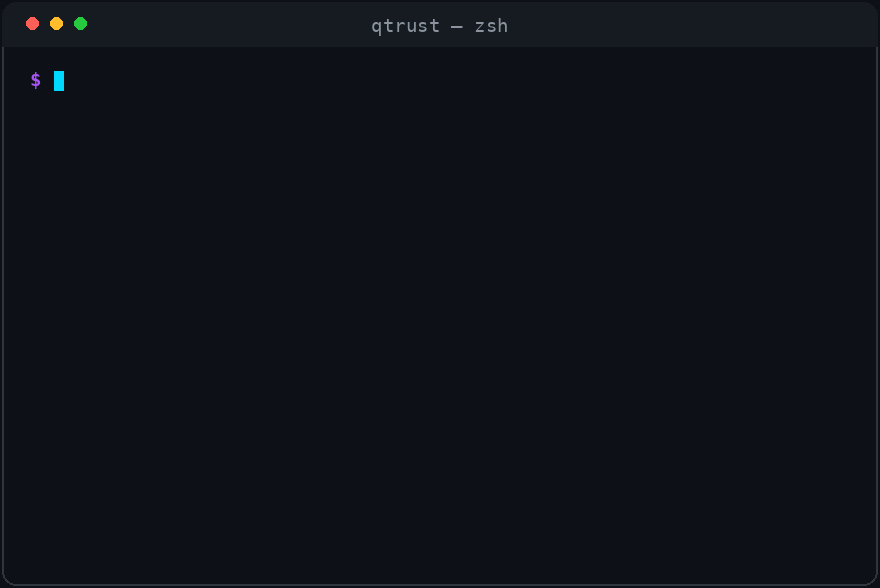

The migration deadline is set by standards bodies, not by attackers.
NIST IR 8547 disallows RSA and ECC signatures on US federal systems after 2030–2035, and CNSA 2.0 pulls National Security Systems to ML-KEM / ML-DSA on an overlapping schedule.
Harvest-now-decrypt-later makes the effective deadline for long-lived secrets today: traffic captured now gets decrypted the day a cryptographically-relevant quantum computer arrives.
EU NIS2, FISMA and FedRAMP increasingly expect a Cryptographic Bill of Materials (CBOM) — you cannot migrate what you have not inventoried.
Every enterprise faces the same wall: cryptography is scattered across TLS endpoints, source code, package manifests, binaries and configs — owned by different teams, with no shared evidence layer between vendors, auditors and customers. Q-Trust closes that loop.
**`discover → score → plan → attest`**
⚙️ Pipeline
flowchart TB
subgraph SCAN["① SCAN — inspector"]
direction LR
tls["TLS / SSH probes"]
src["Source · Manifests<br/>Binaries · Configs"]
end
subgraph SCORE["② SCORE — risk engine"]
risk["NIST SP 800-131A · CNSA 2.0 · FIPS 140-3<br/>NIS2 · FISMA · FedRAMP · CMMC"]
end
subgraph PLAN["③ PLAN — GNN + RL"]
gnn["PyTorch Geometric GNN<br/>Kendall τ 0.961 · RL agent"]
end
subgraph ATTEST["④ ATTEST — Base L2"]
chain["11 UUPS registries<br/>EIP-712 gasless · 7-day timelock"]
end
SCAN -->|"CycloneDX 1.7 CBOM"| SCORE
SCORE -->|"risk-ranked inventory"| PLAN
PLAN -->|"migration steps"| ATTEST
be["⚡ Fastify 5 API + indexer"] -.->|"relays & anchors"| ATTEST
fe["🖥 Next.js 16 dashboard"] --> be
sdk["🐍 Python SDK"] -->|"verify / attest"| be
🎬 Demo

Real CLI, real flow: crypto-inspector scans a live endpoint and emits a CycloneDX 1.7 CBOM, the GNN planner ranks migrations (τ 0.961 vs heuristic optimum), and the evidence root is anchored on Base L2.
cd q-trust
cp .env.example .env # set REDIS_PASSWORD, POSTGRES_PASSWORD, GRAFANA_PASSWORD
docker compose up -d --build
./scripts/verify_all.sh # 9-step full-stack verification
Dashboard at http://localhost:3000 · API at http://localhost:3001 · Grafana at http://localhost:3002 · public verification page at /v/<asset-id>.
🧩 Per-component development setup
# Contracts (Foundry — 211 tests incl. invariant + fuzz + attack)
cd contracts && forge test
# Planner (PyTorch Geometric)
cd planner && python -m qtrust_planner.train
python -m qtrust_planner.predict /tmp/bank_cbom.json
# SDK
pip install -e ./sdk && python -c "from qtrust import QTrustClient; print('OK')"
# Backend (Fastify 5)
cd backend && npm install && npm run build
# Frontend (Next.js 16)
cd frontend && npm install && npm run dev
🐍 Use the Python SDK
from qtrust import QTrustClient, RiskScoringEngine, ComplianceEngine
client = QTrustClient(base_url="http://localhost:3001")
# Verify an on-chain attestation from any chain
result = client.verify(asset_id="...")
print(result.risk_score, result.compliance)
# Score a CBOM locally
engine = RiskScoringEngine()
report = engine.score("cbom.json")
⛓ On-Chain Layer (Base L2)
Eleven UUPS-upgradeable registries behind a 7-day timelock, with EIP-712 gasless submission paths for all write types. Design decisions are recorded as ADRs.
On CUDA hardware (QTRUST_GPU_ENABLED=true), Q-Trust unlocks six GPU features:
#
Feature
Hardware
1
100K-graph BF16 GNN training
A100-class
2
Timing side-channel analysis of PQC implementations (liboqs traces)
A100-class
3
Shor quantum-threat estimation & simulation
A100-class
4
RL migration agent training (10K episodes)
A100-class
5
GPU-batch risk scoring for enterprise scans
any CUDA
6
CBOM anomaly detection
any CUDA
Exposed via REST (/v1/gpu/*) and surfaced in the dashboard's Side Channel tab. Methodology & checkpoints: docs/GPU_FEATURES.md.
🧩 Ecosystem & Packages
Q-Trust ships as installable packages, not just a repo. The Python SDK and the inspector CLI are packaged for PyPI, the backend and planner services run as containers, and the full protocol lives on the docs site. Take the piece you need: